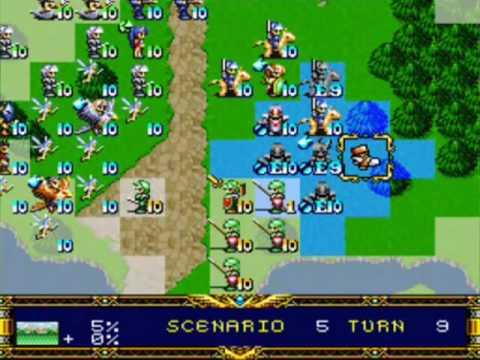
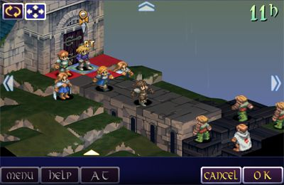
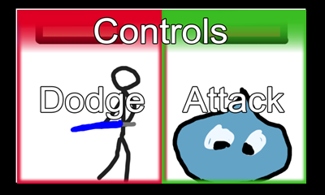
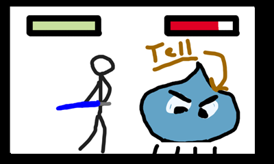
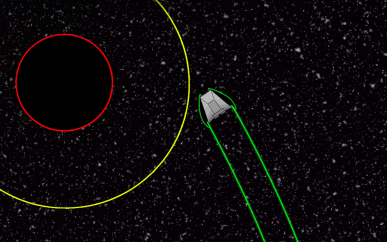
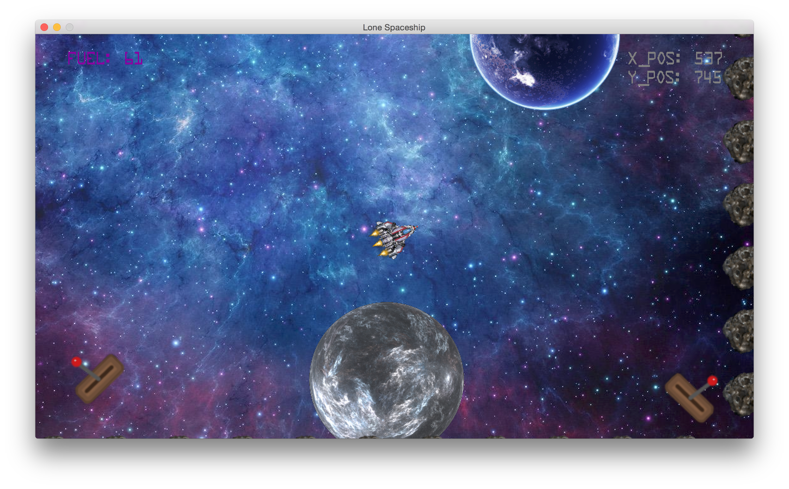
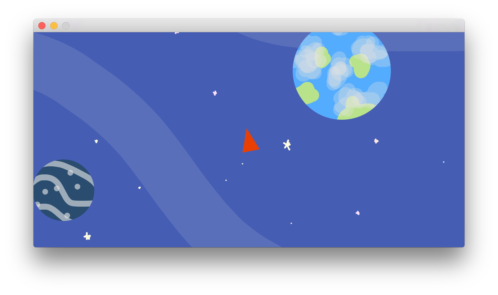
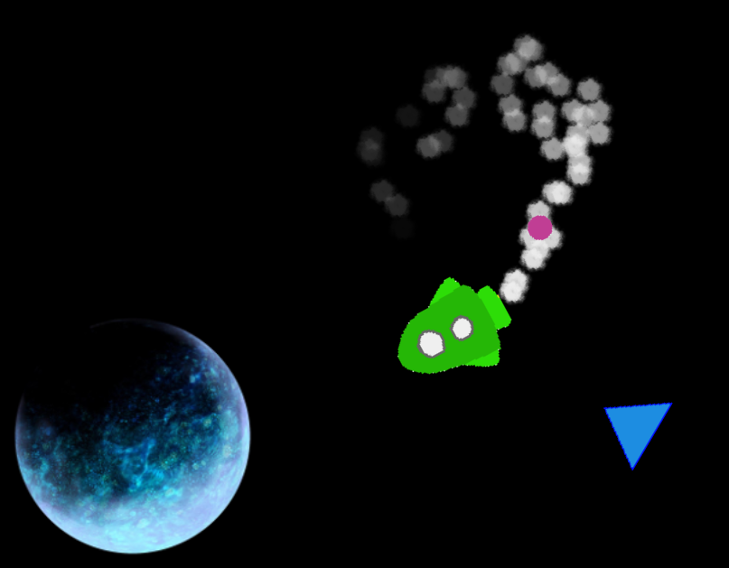

- Week 1
- Week 2
- Week 3
- Week 4
- Week 5
- Week 6
- Week 7
- Week 8
- Week 10
- Week 12
- Semester Break
- Week 1
- Week 3
- Week 5
- Week 7
Introduction and Overview
I didn’t really know what to expect from this course. All I had heard from friends who had taken the course before was that it was a yearlong group project. It was kind of daunting thinking that I would be stuck with the same people for an entire year and it really made me fret about the importance of getting a good group of people that I could trust and rely on.
After hearing about TechLauncher, I was confident that I could find such a team. Surely someone would put across an idea I could get behind. I was considering putting forward my own idea, which would have been a mobile video game. I decided against it because I wanted to work as part of a team where I had little say what was going on to prepare myself for working graduate jobs. I did this because I want to experience being told what to do, when to do it and if it was good work or not. If I’m the project leader then I don’t think I would get the full experience I was after.
Overall the course sounds like a lot of fun so far and I am excited and nervous for the team orientation day and picking my project.
Projects and TechLauncher
Most of the proposed projects are now available to look at on the TechLauncher website and our preferences are due. The project idea I was originally going to propose came up from another student so I put my first preference as that. His idea was more set in stone as an RPG game. It was explained in his project brief that he was really into a lot of the same games that I had considered my favorites for a long time.
 
I thought this was great because I would be working with likeminded people if I got into this group. I found some other groups interesting such as the Magic card recognition group and the Rating systems group.
The lecture this week was kind of a big advertisement for the CBR Innovation Network but it was still quite interesting. It seems like there is a huge network of people actually getting behind TechLauncher so that makes me even more excited for team formation day and the future of my group. My first preference is a startup so I am interested how things will work regarding startups.
Group and Project Choice
Team formation day has come and gone and it was extremely chaotic and a little bit stressful. Fortunately I got to join my first preference group and meet my team members. It was kind of odd starting to discuss a project we would be working on for an entire year with complete strangers but I guess that’s how it would be in the real world at a real job.
Team formation day was really strange because it turns out that two of the groups I was interested had merged together, leaving two masters students looking for two-three other students to complete their group. Heaps of people were interested in their group which made it a difficult process to get into. I kind of had to push and bother them about giving me an answer to whether I was in or not because I wanted to make sure I got my second preference if that one fell through. Luckily they decided that my past experiences were enough to let me in. We ended up with only four people, two masters students, and two third year students. The other third year actually seems like the most experienced and talented in the group and he seemed to have a lot of experience with the technology we would be working with.
It turns out his idea for an RPG game specifically wasn’t exactly set in stone and was quite open to suggestions. We discussed what made mobile apps successful and common traits of the top mobile apps and kind of decided that maybe an RPG game would have too much going on for a small screen such as a phone. It kind of turned into a democratic process and we decided that at our next meeting, we would all put forth our own game ideas and we would vote on the best idea. While not being something that would generally happen outside of a startup, it was fantastic that I could be included in design choices. I can’t really say much as to if this is the best way to begin, but I feel as though it’s the best thing we could do as far as forming our team and project is concerned, and I hope it works.
Individual Idea Presentations
The game idea that I have decided to present to my team is kind of difficult to explain, but I wanted a sort of rhythm based action game which required you to time your dodges and attacks to progress as fast as you could. I tried to keep it to only two buttons, dodge and attack, so that people could play it with one finger after researching that most successful apps are played with a single finger.
 
Benjamin, one of the masters students, stuck with his idea of a turn based RPG. While he presented it well, I don’t think anyone else believed it would handle well on a phone. Artem, the other masters student, had a very innovative idea based on not playing the game at all. You would have to set sliders and stuff the determine behaviour of a character and events would play out automatically based on the sliders. An interesting idea, but I personally thought it would be boring not being able to play and wasn’t really looking to make such a game.
Unfortunately my game didn’t win the vote in the end, losing to Eamon’s (third year) fantastic concept of a space based game where you used the gravitational pull of planets to slingshot around the game space. I wasn’t really disappointed with the vote not going my way because I genuinely thought that his idea was more suitable for a first time project and generally a better idea for a phone game.
It was integral to our project that we get the concept and ideas down before we started any coding whatsoever. I found that the way we did things was extremely fair and equal opportunity and I believe that the best idea came out on top and everyone is happy with it. So far everything is going pretty well. We have our idea, now all we need to do is work out the finer design and get started!
Roadblocks in Design
This has been the most disheartening week so far, as we’ve basically come to a standstill at the design phase of our project. Figuring out what is going to be fun and what isn’t going to be fun is much harder than I first anticipated. We all seem to have different ideas about the game and what we thought it would be like in our heads which is very difficult to explain. I honestly don’t know how people do it in the industry. I thought that the best way we could possibly explain what we had in mind was to actually create prototypes that each of the other group members could play. The concern with prototyping so early was that we were wasting time all working on our own thing, but I think that it will be the only way to accurately push across our ideas to one another.
I really don’t know how people do it in the actual game creation industry, I suppose they have a lot more time to have detailed and long design meetings, something that we just did not have the time for. I think we have taken the correct steps but I can’t really be sure until all of our prototypes are finished and we come up with a final design. If we can do this in good timing, I’m sure it will have been worth it. This has really changed my attitude towards what I thought the design process would be like, but again I guess that can be attributed to our lack of time together. Even though we have been meeting regularly, it will never compare to working 9-5 with everyone.
I’m a little worried by our progress at this point. I’m not sure where we are supposed to be, but I think we should have finalized our design by now. The prototyping is definitely a step in the right direction though so I hope it all falls into place sooner rather than later.
Mentor Meetings and Continued Prototyping
After beginning our prototyping, we started coming up with things we didn’t like about our initial ideas, which is great! I think that the prototyping step that we have taken has led to a bunch of fantastic ideas. My concern about being behind project wise were pretty much dispelled after our meeting with Shayne Flint, who told us that we were pretty much 100% on track and doing the right thing. He even said that the prototyping was a great idea to progress in our design, and that they could also be shown at our first showcase.
We met our mentor this week, Zak Bouguettaya, who is part of a team in Canberra who I actually know of, Imagine Team. We met up with him at his office and he gave us some absurdly useful insight into the marketing side of things. It was basically a monetization meeting in the end, and the suggestions and ideas he offered will be invaluable when applied to our own marketing scheme, if we ever have one that is. He really offered insight into the actual industry we are trying to break into, whether it is landing pages, content marketing or easily acquisition of resources. While all of this is a goal, it is something I think we have decided will be secondary until our second game, if it ever comes to that, or if we have a great deal of time before the end of the year.
We are starting to set up our proper file sharing stuff and repositories which are greatly important when it comes to proper development work. Screenshots of prototypes and such are starting to be shared which I think is really pushing our designs forward in a good way. It has caused us to start discussing more control schemes and overall features which we may not have done if we hadn’t done so many prototypes. Overall the prototyping phase is starting to look better and better, which is something I think all of us are really happy about.
Business Model Canvas and More Prototyping
This week has been pretty slow due to the influx of other assessment work and stuff, so we haven’t really had time to meet up for continued discussion of design. We did, however, create a business model canvas for use in our poster. I think that was a great exercise and I’m glad we did it because it really solidifies a lot of the goals, milestones and endpoints we were previously unsure of. There is no wonder why business model canvases are so popular, they do their job spectacularly. They have proven to work for big businesses such as Skype and LinkedIn and I feel as though it helped us too. It made us nail things down such as which version of android/IOS we were targeting and confirming how we would be distributing it. It also made us think of things we should have thought of earlier such as customer relations and customer segments.
Our prototypes are going along nicely and we have decided to continue working on them through the Easter break. I’m continuing to be hopeful that these prototypes will help us get a design that we are really happy with in the long run, instead of regretting specific design choices too late into the project. Below are some screenshots of each of our prototypes.
 My Prototype
 Artem's Prototype
 Eamon's Prototype
 Benjamin's Prototype
Study Break and Starting on our Engine
During the study break, we continued to meet up and work on our prototypes. We also managed to get started on a basic engine written in C++ which drew from each of our prototypes, but mainly Eamonns, as the engine was an expansion of his prototype. We have also started discussion the creation of our website, which we deemed necessary through our mentor meetings with Zak. To start off we are going to use a template that we bought off of www.themeforest.com, as it comes with a few landing pages that we can alter to fit our needs. (This learning portfolio is actually a part of that template too). Some information about our product, maybe some information about who we are and why we are doing what we are doing, general things like that. As an expansion of the landing page, we are also looking on getting our social media accounts in order. We are looking to have a twitter page and a Facebook page. Themeforest link to our template
We are still kind of working on our prototypes because we want to use them to really flesh out our ideas and draw on them to decide on important features and mechanics of our final game. We want to show off all of our prototypes at the first project review as well as show off the basic engine that we have started on. We plan to have a working prototype on IOS, which doesn’t seem too far off at the moment. Since the project review is just around the corner, we all some tasks assigned on BitBucket as well as our prototypes to finish off.
Project Review #1
Our first project review has come and gone and the feedback we have received has really helped us understand where we are in comparison to the other groups, what we are doing right and most importantly, what we are doing wrong.
To start with what we are doing wrong, it was very clear that contact with our mentor very, very poor. Only meeting a few times before this, he was not prepared for the review and didn’t even turn up. Zak did give us heaps of help with the marketing side of things, but didn’t really seem to be that helpful with where we were right now and the past 10 or so weeks which was more of the design phase and the planning phase. Due to this we didn’t really seem it necessary to use him as much as we probably should of because we were planning on utilizing him more when it got to that marketing stage. The mistake we made was not asking the right questions and maybe even underestimating the help that he could be at the stage we were at. The second thing that we were doing wrong was not really logging our tasks and time spent on the project. We are yet to discuss what we will do to solve this but I’m sure it will come up at the next meeting. It’s really important that we solve this problem so that our project estimations and progress can be accurately measured, something that is very important in the grand scheme of things.
I think we did a lot of things right going into this project review, one of those things being meeting regularly. We have met pretty much every Saturday for one or two hours since the project began and due to this we have really great communication and know where everyone else in the group is up to. Personally I have fallen a bit behind due to some illness but I’m looking to redouble my efforts in the next phase of the project. We had a carefully planned presentation ready to go and met the day before the review to practise and finalise what we were going to do. We also made a video to go with our presentation which featured all of our prototypes. Our logging of meetings, engineering processes and general coherence was pretty well received but it was mentioned that we were kind of behind some of the front running teams, which kind of worried us as there had been a lot of work done coming into this review. Overall we thought we did pretty well which was a bit of a confidence booster and raised team morale quite a bit.
Our next milestone is the next project review which is after the semester break, so this weekends meeting is going to be planning for that.
Graphics, Music and Art Direction
A huge problem that we have decided to address which we have had from the beginning is that severe lack of any artistic talent in our group. For a game to be successful, especially an app on the appstore, it needs to be visually appealing and have a great soundtrack. To solve this problem, we have emailed the schools of art and music and have received some emails from students at the school of music who may want to work with us. After getting some samples from some of these students, we were really excited to work with one of them, a guy called Jamal Salem. We didn’t have many responses from the school of art yet, so we hadn’t really progressed in terms of samples or choosing an applicant on that side of things.
We decided to try and get some outside talent party due to our project review where the examiners reinforced it as a good idea due to non-technical eyes being a great help usually, and also because of the market research we did. It doesn’t really matter how great your game is, if it looks terrible, no one is going to play it. Since a bunch of other subjects are really starting to heat up due to exams just around the corner, we have not really moved on a great deal, and have been pottering a little bit. Our goal is to do some work in the semester break and get ready for our next project review once we get back into it next semester. Since people are going away and are otherwise indisposed, we probably won’t get a great deal of work done, so will need to crack down once we get back in week 1 of next semester, since the project review is in week 3.
Semester Break
It’s one week into the semester break and we have met with some people from the school of art who are interested in helping us with our game. One artist in particular, Aidan Cleary had some fantastic work to show us, and seemed really keen. We have some tasks and issues we plan on addressing during the break but because of variable availability, we’re not really sure what will be done. We will try and meet up as much as we can though, since it has been working really well for us so far.
Back into it! …Slowly
During the mid-year break, we continued working on the game, and finalised our artist Aidan Cleary. He designed some great looking enemies and ships for our game and is continuing to work on our art direction and general graphics. We tried getting into contact with the music guy Jamal, but we haven’t been able to so far. Our game has now evolved from a bunch of triangles and circles into a game with ships, aliens and planets, a huge upgrade from what it was before.
With the second project review coming up, we have decided to really work on finishing up our goals for the engine and the landing page. Our goals for the engine include some fully playable levels and a menu and title screen, as well as integration of all of our graphics. I suppose we haven’t done as much as we may have liked to over the holidays and first week but that seems to be the struggle of a start-up when it’s not the only thing you’re doing. Availability has been a huge factor in what we’ve been doing.
After a few meetings with Zak, our mentor, we are also going to focus on starting to build our fanbase and coverage, something that is extremely important for start-ups when it comes to actually achieving any sales, or getting recognised. To do this we have kind of scrapped the idea of a landing page for now, and have decided to go for a more vague but interesting marketing strategy in the form of a subscription website which gives as little detail as possible, but should intrigue people enough to give us their email address, therefore increasing coverage. Our idea is to have a sort of interactive website, where the user will enter their email address to add a satellite to a planet in the middle of the screen which contains a countdown to the release of our game. We are hoping that if we flesh this idea out enough, it will encourage users to take part, therefore increasing our coverage by a relatively huge amount.
To increase coverage a little bit further, and of course to help ANU out, we plan on presenting at open day as well.
Project Review #2
Project review number two has come and gone, and I think we have done a great job this time. I presented the website that I have been working on which built focusing on HTML5 and canvas in particular. I learnt a great deal from creating the landing page, probably the most I have learnt so far when it comes to pure coding skills this year. We also presented our updated game, which now has enemies, weapons, levels and sound. We have started organising task management a lot better now and have been working on estimates for future features. Previously our task management hadn’t been great so sometimes we found ourselves struggling on what to do next. I think we have rectified this issue and it will be really helpful in getting us over the line towards the end of the project.
We also had our first tutor meeting, but it was pretty questionable in terms of usefulness as it was only one week after our project review. We spent 30 minutes bringing our tutor up to speed and repeating everything we had already said in our project review and that was pretty much it.
The website isn’t completely finished though, and by open day we want people to be able to sign up and dynamically add another satellite when they do. This visual representation of joining in on something will hopefully attract people into signing up to our release email and hopefully build interest for our game.
Click here to visit our website, www.oddvessel.com.
Tutor Meeting & Heading into Open Day
Our second tutor meeting was last week and it was kind of similar to the first one. It was a bit better this time because he really tried to understand what each of us specifically had accomplished since the last meeting. Personally I have been trying really hard to finish up the website for open day which is next week. At the moment everyone is working on their own little things, trying their best to get everything done for open day. We all have our own tasks to do, but when problems arise we have been helping each other out however we can. I guess when crunch time comes along people have to focus hard on what the rest of the team expects of them which I think is what we are going through now.
Due to having an all-day stand in the sports hall, we needed some promotional material for the event to help build interest in our game. We have whipped up a couple of posters and have an idea for a sort of competition where the highest scorer playing our game will win a $20 voucher for JB HIFI. We plan on taking a computer so that people can sign up, as well as setting up a monitor with the current high scores on the screen. Hopefully we can generate heaps of coverage so that we have more options for future marketing plans.
Post Open Day
Open day was basically a huge disaster. It generated basically zero interest outside of about 3 people that signed up. Nobody seemed very interested in the game we have made most likely because of the demographic of people that were there, as well as the kind of lacklustre and incomplete art style we have going right now. None of us are artists and relying on someone with no stake in the course or even properly in the game itself is difficult because it doesn’t push for innovation and making it look as good as it possibly can. This is a fundamental flaw in our project which I have come to realise. Our game from a consumer stand point is absolutely nothing special. It may have a clever mechanic behind it, but overall it’s completely subpar. Only after manning the stall at open day did I begin to realise these issues.
Our game is very obviously in beta, still using placeholder artwork and sprites. The people at open day didn’t care about this at all. They were completely unwilling to give it a try because it looked boring, which in my opinion is fair enough. We had a couple of people actually play the game, none of them over the age of 15 so I think it’s safe to assume they only played because they were excited to see a video game at an event their parents had dragged them to. We had nothing to pull people into trying our game because our game isn’t flashy. Fundamentally, it’s not a bad game, but the bells and whistles attached to modern day successful games of the same genre were simply not there due to a lack of artistic talent in the team. If we had super cool screen flashes, booster rockets, screen shakes, explosive weapons and fantastic artwork, sure, maybe open day would have been a rousing success, but we didn’t and it wasn’t. I kind of expected this to happen the night before when we were playing our freshly completed tutorial. I realised it was dead boring when I put myself in the consumers shoes and assumed nothing about the game. Obviously it was too late to do anything about open day except do the best with what we had. I brought this up with the team with mixed reactions, one member agreeing with me and the other two being optimistic that it would be fine.
I think that we assumed that we needed to start marketing our game, but ultimately, outside of the vague landing page we have, it just wasn’t ready. People are not looking for solid coding fundamentals or clever mechanics when they’re looking for a new game. They look for great aesthetics and exciting artwork, something we didn’t have. To push this game into a marketable state, we’re going to have to buckle down and work on the bells and whistles which will generate real interest in our game.